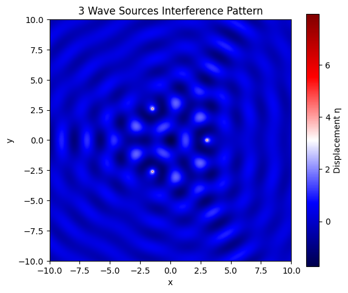

Problem 1
🌊 Wave Interference Simulation on Water Surface
🎯 Task Overview
We are tasked with analyzing the interference patterns created by circular water waves emitted from multiple coherent point sources, which are positioned at the vertices of a regular polygon.
This involves studying constructive and destructive interference as the waves spread and interact over time and space.
📐 Mathematical Foundation
🔹 Single Point Source: Circular Wave Equation
The vertical displacement \( \eta(x, y, t) \) of the water surface at a point \( (x, y) \) and time \( t \), caused by a point source located at \( (x_0, y_0) \), is modeled by:
Where:
- \( A \): amplitude of the wave (how high the peaks are)
- \( r = \sqrt{(x - x_0)^2 + (y - y_0)^2} \): radial distance from the source
- \( k = \frac{2\pi}{\lambda} \): wave number, related to the wavelength \( \lambda \)
- \( \omega = 2\pi f \): angular frequency, related to the frequency \( f \)
- \( \phi \): initial phase
- \( \frac{1}{\sqrt{r}} \): accounts for 2D spreading — energy disperses in a circular pattern
This equation assumes linear, non-dissipative, and isotropic wave propagation — a typical approximation for surface ripples in water.
🧪 Problem Statement
We want to simulate and analyze the interference patterns created by the superposition of surface waves, each emitted from point sources arranged in a regular polygon.
We aim to:
- Identify regions of constructive interference (amplification)
- Identify regions of destructive interference (cancellation)
- Visualize how these patterns evolve over time
🧭 Step-by-Step Procedure with Physical Reasoning
1. Select a Regular Polygon
Choose a regular polygon (e.g., triangle, square, pentagon). This determines:
- The number of point sources \( N \)
- Their symmetric positions around a center
- The overall interference geometry (e.g., triangular symmetry)
2. Position the Sources
Place point sources at the vertices of the selected polygon.
If the polygon is centered at the origin and has radius \( R \), then the position of the \( i \)-th vertex is:
This provides evenly spaced sources around a circle.
3. Write the Wave Equation for Each Source
For each source \( i \) located at \( (x_i, y_i) \), the wave it emits is:
where \( r_i = \sqrt{(x - x_i)^2 + (y - y_i)^2} \)
All sources emit coherently: they have the same frequency, wavelength, amplitude, and phase.
4. Apply Superposition Principle
At each point \( (x, y) \) on the surface, the total displacement is the sum of individual contributions:
This is the core concept of wave interference. The waves add up constructively or destructively depending on their phase relationship at each point.
🔬 Analyzing Interference Patterns
Constructive Interference
Occurs when wave crests from different sources meet: - Waves arrive in-phase - Resulting amplitude increases - Mathematically, phase difference \( \Delta \phi = 2n\pi \)
Destructive Interference
Occurs when a crest meets a trough: - Waves arrive out-of-phase - Resulting amplitude decreases or cancels - Phase difference \( \Delta \phi = (2n+1)\pi \)
These interference effects depend on: - Source distances - Wavelength - Frequency - Spatial arrangement
